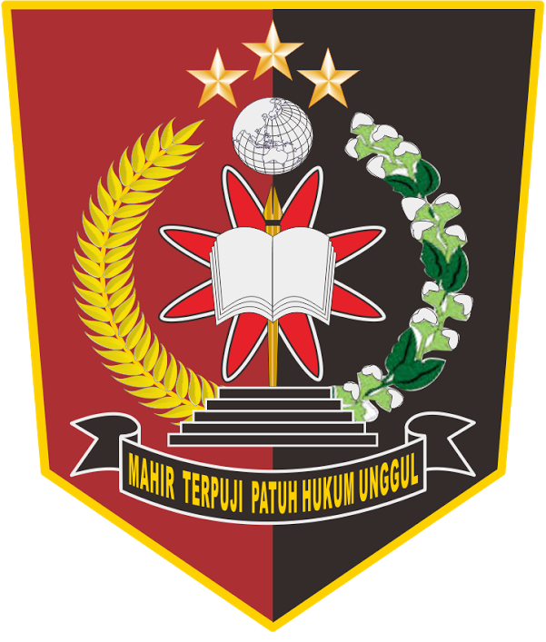
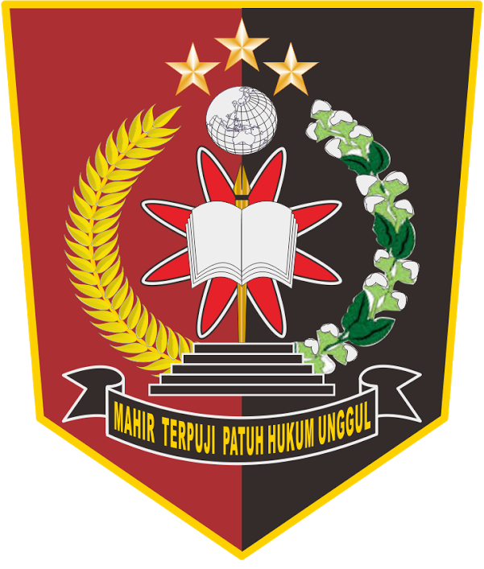

Pembukaan Pendaftaraan Anggota Kepolisian
 

Taruna Akpol
Taruna Akpol adalah calon-calon perwira Polri (Kepolisian Republik Indonesia) yang sedang menjalani pendidikan di Akademi Kepolisian (Akpol). Mereka adalah para pemuda dan pemudi yang telah lolos seleksi ketat dan memiliki keinginan kuat untuk menjadi bagian dari institusi kepolisian. Proses pendidikan mereka di Akpol melibatkan berbagai pelajaran dan latihan yang mencakup aspek akademis, kepemimpinan, keterampilan fisik, dan moralitas.
Selama masa pendidikan, Taruna Akpol dibekali dengan pengetahuan dan keterampilan yang dibutuhkan untuk menjadi pemimpin yang berkualitas dan bertanggung jawab dalam menjaga keamanan dan ketertiban masyarakat. Mereka belajar tentang hukum, prosedur investigasi, manajemen kasus, taktik kepolisian, dan berbagai bidang lainnya yang relevan dengan tugas-tugas polisi.
Selain itu, Taruna Akpol juga menjalani latihan fisik yang intensif untuk meningkatkan kebugaran dan ketahanan tubuh, yang merupakan bagian penting dari kesiapan dalam menjalankan tugas-tugas kepolisian di lapangan. Selama masa pendidikan mereka, juga ditanamkan nilai-nilai etika, integritas, dan dedikasi yang tinggi sebagai bagian dari identitas seorang polisi yang profesional.
Setelah menyelesaikan pendidikan mereka di Akpol, Taruna Akpol akan dilantik sebagai perwira polisi dan ditempatkan di berbagai unit kepolisian di seluruh Indonesia, siap untuk menjalankan tugas-tugas mereka dengan penuh tanggung jawab dan dedikasi kepada masyarakat.
Bintara Polri
Bintara Polri adalah jenjang karier di dalam Kepolisian Republik Indonesia (Polri) yang mengacu pada pangkat dari perwira rendah. Para anggota Bintara Polri adalah bagian vital dari kepolisian, mereka biasanya bertanggung jawab atas pelaksanaan tugas-tugas operasional di lapangan dan membantu dalam menjaga keamanan serta ketertiban masyarakat.
Proses penugasan bagi Bintara Polri sangat bervariasi, tergantung pada unit atau divisi di mana mereka ditempatkan. Mereka bisa menjadi anggota patroli, anggota unit lalu lintas, penyidik di tingkat rendah, anggota satuan keamanan, atau bertugas di berbagai unit kepolisian lainnya sesuai dengan spesialisasi atau kebutuhan operasional.
Bintara Polri biasanya telah menjalani pendidikan di sekolah kepolisian khusus atau melalui jalur pendidikan lain yang diselenggarakan oleh Polri. Mereka juga dapat melanjutkan pendidikan dan pelatihan lanjutan untuk meningkatkan keterampilan dan pengetahuan mereka dalam menjalankan tugas-tugas kepolisian.
Seorang Bintara Polri diharapkan memiliki integritas tinggi, keterampilan komunikasi yang baik, kemampuan dalam menangani situasi yang berpotensi konflik, dan komitmen untuk melayani masyarakat dengan baik. Mereka merupakan ujung tombak dari Polri dalam menjaga keamanan dan ketertiban di tingkat lokal, serta menjadi mitra penting bagi komunitas dalam memperkuat hubungan antara polisi dan masyarakat.
Tamtama Polri
Tamtama Polri adalah jenjang karier di Kepolisian Republik Indonesia (Polri) yang mengacu pada pangkat dari anggota Polri yang berada di tingkat terendah. Mereka merupakan tulang punggung dari organisasi kepolisian, bertanggung jawab atas pelaksanaan tugas-tugas operasional sehari-hari di lapangan.
Anggota Tamtama Polri biasanya bertugas dalam berbagai peran operasional, termasuk patroli, pengamanan, penegakan hukum, dan penanganan kejadian kriminal. Mereka dapat ditempatkan di unit lalu lintas, unit patroli, unit reserse, dan unit-unit lainnya sesuai dengan kebutuhan Polri.
Proses perekrutan dan pelatihan bagi anggota Tamtama Polri berbeda-beda tergantung pada jalur masuk dan spesialisasi yang diikuti. Beberapa di antaranya mungkin mengikuti pendidikan di sekolah kepolisian khusus untuk tamtama, sedangkan yang lain dapat direkrut melalui jalur non-akademis dan menjalani pelatihan di tempat.
Anggota Tamtama Polri diharapkan memiliki kedisiplinan yang tinggi, keterampilan fisik yang baik, serta kemampuan untuk bekerja dalam tim dan menangani situasi yang berpotensi konflik dengan bijaksana. Mereka juga diharapkan memperlihatkan integritas yang tinggi dalam menjalankan tugas-tugas kepolisian dan melayani masyarakat dengan baik. Seiring dengan pengalaman dan kesempatan untuk melanjutkan pendidikan dan pelatihan lanjutan, sebagian anggota Tamtama Polri dapat maju ke pangkat yang lebih tinggi di dalam hierarki Polri.